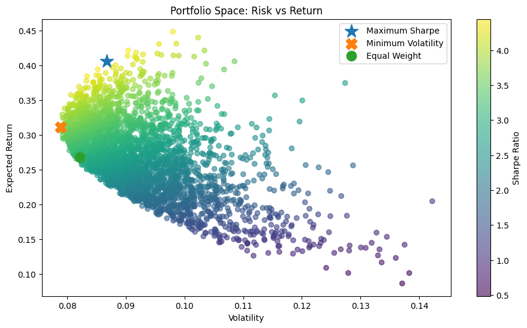
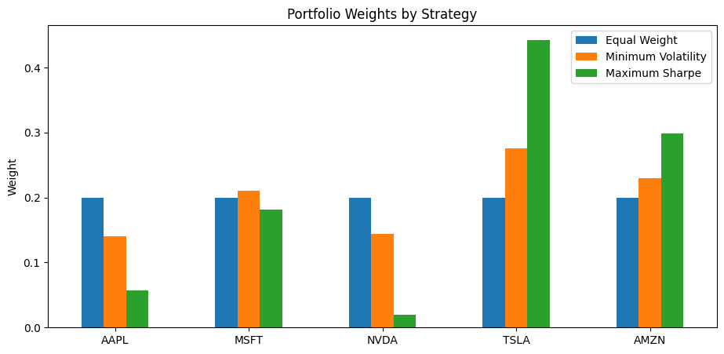

5.5 🧩 Proyecto Integrador: SmartPortfolio Engine#
Este notebook define el ejercicio integrador de la sesión 5.
La idea no es solo hacer analítica en un notebook, sino llevar esa analítica al repositorio SmartPortfolio siguiendo buenas prácticas de ingeniería.
Aquí reunimos:
ingestión de precios (reales o simulados),
cálculo de retornos y riesgo,
optimización de portafolio,
visualización,
recomendaciones automáticas,
testing,
coverage,
integración al repositorio con Pull Request profesional.
🎯 Objetivo del proyecto#
Construir un SmartPortfolio Engine que permita:
Crear una clase
Portfolioque reciba datos reales o simulados.Calcular métricas financieras básicas del portafolio.
Construir un motor de optimización.
Encontrar un portafolio óptimo para un conjunto de tickers propuesto.
Considerar tres estrategias:
Equal Weight
Minimum Volatility
Maximum Sharpe
Generar recomendaciones automáticas.
Mostrar gráficas relevantes.
Integrar todo esto al repositorio
SmartPortfoliocon:tests unitarios,
tests de integración,
coverage,
flujo GitHub profesional.
🧭 Arquitectura esperada#
flowchart LR
A[MarketDataProvider] --> B[Portfolio]
B --> C[Return Engine]
C --> D[Risk Metrics]
D --> E[PortfolioOptimizer]
E --> F[Recommendations]
F --> G[Plots / Reports]
🧠 Idea central#
El notebook es un cheatsheet técnico y arquitectónico.
El entregable final no es este notebook: es la integración de estas ideas dentro del repositorio del proyecto.
1) Estructura sugerida dentro del repositorio#
Una posible organización es:
src/
smart_portfolio/
datasources/
interfaces/
models/
analytics/
metrics.py
indicators.py
portfolio.py
optimizer.py
recommendations.py
tests/
test_portfolio.py
test_optimizer.py
test_recommendations.py
integration/
test_engine_integration.py
No es obligatorio usar exactamente estos nombres, pero sí mantener una estructura modular clara.
2) Datos de entrada: reales o simulados#
El sistema debe permitir dos escenarios:
A. Datos reales#
Usando el provider ya construido en el proyecto (YahooFinanceClient, por ejemplo).
B. Datos simulados#
Útiles para:
pruebas reproducibles,
debugging,
desarrollo sin internet,
tests automatizados.
Esto permite desacoplar la analítica del proveedor real de datos.
import numpy as np
import pandas as pd
import matplotlib.pyplot as plt
np.random.seed(42)
def simulate_prices(
tickers: list[str],
n_days: int = 252,
start_price: float = 100.0,
) -> pd.DataFrame:
"""
Generate reproducible synthetic price series.
Parameters
----------
tickers : list[str]
Asset names / ticker symbols.
n_days : int, default=252
Number of trading days to simulate.
start_price : float, default=100.0
Initial price for all assets.
Returns
-------
pd.DataFrame
Simulated price matrix with one column per ticker.
"""
prices = pd.DataFrame(
{
ticker: start_price + np.cumsum(
np.random.normal(loc=0.08, scale=1.25, size=n_days)
)
for ticker in tickers
}
)
return prices
tickers = ["AAPL", "MSFT", "NVDA", "TSLA", "AMZN"]
prices = simulate_prices(tickers=tickers, n_days=252)
prices.head()
| AAPL | MSFT | NVDA | TSLA | AMZN | |
|---|---|---|---|---|---|
| 0 | 100.700893 | 102.732695 | 99.266697 | 100.696647 | 101.391941 |
| 1 | 100.608062 | 104.103277 | 98.737790 | 101.007693 | 100.802897 |
| 2 | 101.497673 | 102.284064 | 98.077298 | 100.014745 | 102.529639 |
| 3 | 103.481460 | 101.758772 | 97.077309 | 100.970133 | 102.856639 |
| 4 | 103.268769 | 103.422411 | 97.217961 | 100.330585 | 105.530715 |
3) Clase Portfolio#
Esta clase debe encapsular la lógica básica del portafolio.
Responsabilidades mínimas#
almacenar precios,
calcular retornos,
calcular retorno esperado,
calcular matriz de covarianza,
calcular métricas agregadas para un vector de pesos.
classDiagram
class Portfolio {
+prices : DataFrame
+returns : DataFrame
+expected_returns()
+covariance_matrix()
+portfolio_performance(weights)
}
from __future__ import annotations
from dataclasses import dataclass, field
@dataclass(slots=True)
class Portfolio:
"""
Portfolio object that stores prices and derives return/risk information.
"""
prices: pd.DataFrame
returns: pd.DataFrame = field(init=False)
def __post_init__(self) -> None:
if self.prices.empty:
raise ValueError("Prices DataFrame cannot be empty.")
self.returns = self.prices.pct_change().dropna()
def expected_returns(self, annualization: int = 252) -> pd.Series:
"""Return annualized expected returns."""
return self.returns.mean() * annualization
def covariance_matrix(self, annualization: int = 252) -> pd.DataFrame:
"""Return annualized covariance matrix."""
return self.returns.cov() * annualization
def portfolio_performance(
self,
weights: np.ndarray,
risk_free_rate: float = 0.02,
) -> dict[str, float]:
"""
Compute expected return, volatility, and Sharpe ratio.
"""
mu = self.expected_returns().values
cov = self.covariance_matrix().values
port_return = float(np.dot(weights, mu))
port_vol = float(np.sqrt(weights.T @ cov @ weights))
sharpe = (port_return - risk_free_rate) / port_vol if port_vol > 0 else np.nan
return {
"expected_return": port_return,
"volatility": port_vol,
"sharpe": sharpe,
}
portfolio = Portfolio(prices=prices)
portfolio.expected_returns()
AAPL 0.185237
MSFT 0.236243
NVDA -0.012454
TSLA 0.519255
AMZN 0.410001
dtype: float64
4) Estrategia 1: Equal Weight#
La estrategia más simple: repartir el capital de forma uniforme entre los activos.
¿Por qué es útil?#
Porque funciona como baseline.
Toda estrategia sofisticada debería compararse contra algo simple y entendible.
def equal_weight_portfolio(n_assets: int) -> np.ndarray:
"""
Build an equal-weight allocation.
"""
return np.array([1.0 / n_assets] * n_assets)
weights_equal = equal_weight_portfolio(len(tickers))
portfolio.portfolio_performance(weights_equal)
{'expected_return': 0.26765646776117125,
'volatility': 0.08212035533104552,
'sharpe': 3.015774429650391}
5) Motor de optimización#
Ahora queremos un componente explícito para explorar muchas combinaciones posibles de pesos.
Responsabilidades mínimas#
simular portafolios aleatorios,
identificar:
el de mayor Sharpe,
el de mínima volatilidad,
devolver métricas y pesos.
flowchart LR
A[Portfolio] --> B[PortfolioOptimizer]
B --> C[Random Weights]
C --> D[Performance Metrics]
D --> E[Best Portfolio]
from dataclasses import dataclass
@dataclass(slots=True)
class PortfolioOptimizer:
"""
Monte Carlo portfolio optimizer.
"""
portfolio: Portfolio
risk_free_rate: float = 0.02
def simulate(self, n_portfolios: int = 5000) -> tuple[pd.DataFrame, list[np.ndarray]]:
"""
Generate random portfolios and evaluate them.
"""
mu = self.portfolio.expected_returns().values
cov = self.portfolio.covariance_matrix().values
n_assets = len(mu)
records: list[tuple[float, float, float]] = []
weights_list: list[np.ndarray] = []
for _ in range(n_portfolios):
weights = np.random.random(n_assets)
weights = weights / weights.sum()
port_return = float(np.dot(weights, mu))
port_vol = float(np.sqrt(weights.T @ cov @ weights))
sharpe = (
(port_return - self.risk_free_rate) / port_vol
if port_vol > 0
else np.nan
)
records.append((port_return, port_vol, sharpe))
weights_list.append(weights)
results = pd.DataFrame(
records,
columns=["expected_return", "volatility", "sharpe"],
)
return results, weights_list
@staticmethod
def max_sharpe(
results: pd.DataFrame,
weights_list: list[np.ndarray],
) -> tuple[pd.Series, np.ndarray]:
"""Return best portfolio by Sharpe ratio."""
idx = results["sharpe"].idxmax()
return results.loc[idx], weights_list[idx]
@staticmethod
def min_volatility(
results: pd.DataFrame,
weights_list: list[np.ndarray],
) -> tuple[pd.Series, np.ndarray]:
"""Return minimum-volatility portfolio."""
idx = results["volatility"].idxmin()
return results.loc[idx], weights_list[idx]
optimizer = PortfolioOptimizer(portfolio=portfolio, risk_free_rate=0.02)
results_df, weights_list = optimizer.simulate(n_portfolios=3000)
results_df.head()
| expected_return | volatility | sharpe | |
|---|---|---|---|
| 0 | 0.297305 | 0.088339 | 3.139097 |
| 1 | 0.298010 | 0.088777 | 3.131549 |
| 2 | 0.193645 | 0.093704 | 1.853126 |
| 3 | 0.253849 | 0.087468 | 2.673549 |
| 4 | 0.324687 | 0.088190 | 3.454888 |
6) Estrategias 2 y 3#
Ya podemos obtener las dos estrategias restantes:
Maximum Sharpe
Minimum Volatility
max_sharpe_metrics, max_sharpe_weights = optimizer.max_sharpe(results_df, weights_list)
min_vol_metrics, min_vol_weights = optimizer.min_volatility(results_df, weights_list)
max_sharpe_metrics, min_vol_metrics
(expected_return 0.405752
volatility 0.086774
sharpe 4.445461
Name: 495, dtype: float64,
expected_return 0.311363
volatility 0.078865
sharpe 3.694439
Name: 908, dtype: float64)
7) Comparación de los tres casos#
Debes comparar explícitamente:
Equal Weight
Minimum Volatility
Maximum Sharpe
Esto es importante porque el problema del portafolio no tiene una única respuesta correcta; depende del criterio.
equal_metrics = portfolio.portfolio_performance(weights_equal, risk_free_rate=0.02)
comparison_df = pd.DataFrame(
{
"Equal Weight": equal_metrics,
"Minimum Volatility": min_vol_metrics.to_dict(),
"Maximum Sharpe": max_sharpe_metrics.to_dict(),
}
)
comparison_df
| Equal Weight | Minimum Volatility | Maximum Sharpe | |
|---|---|---|---|
| expected_return | 0.267656 | 0.311363 | 0.405752 |
| volatility | 0.082120 | 0.078865 | 0.086774 |
| sharpe | 3.015774 | 3.694439 | 4.445461 |
8) Recomendaciones automáticas#
Una vez tienes métricas y pesos, puedes construir reglas simples de recomendación.
Ejemplos de reglas#
Si un portafolio concentra demasiado peso en un activo → advertencia.
Si la volatilidad es muy baja → perfil conservador.
Si el Sharpe es alto → buena eficiencia riesgo-retorno.
Estas reglas no reemplazan un asesor financiero, pero sí muestran cómo el sistema puede generar insights automáticos.
def generate_recommendation(
weights: np.ndarray,
metrics: dict[str, float] | pd.Series,
concentration_threshold: float = 0.40,
) -> list[str]:
"""
Generate simple recommendation messages based on weights and metrics.
"""
msgs: list[str] = []
max_weight = float(np.max(weights))
volatility = float(metrics["volatility"])
sharpe = float(metrics["sharpe"])
if max_weight > concentration_threshold:
msgs.append("Portfolio is highly concentrated in one asset.")
if volatility < 0.15:
msgs.append("Portfolio has relatively low volatility (defensive profile).")
elif volatility > 0.35:
msgs.append("Portfolio has high volatility (aggressive profile).")
if sharpe > 1.0:
msgs.append("Portfolio shows strong risk-adjusted performance.")
elif sharpe < 0.3:
msgs.append("Portfolio has weak risk-adjusted performance.")
if not msgs:
msgs.append("Portfolio looks balanced under current simple rules.")
return msgs
recommendations_max_sharpe = generate_recommendation(max_sharpe_weights, max_sharpe_metrics)
recommendations_min_vol = generate_recommendation(min_vol_weights, min_vol_metrics)
recommendations_max_sharpe
['Portfolio is highly concentrated in one asset.',
'Portfolio has relatively low volatility (defensive profile).',
'Portfolio shows strong risk-adjusted performance.']
9) Gráfica principal: espacio riesgo-retorno#
Esta es una de las visualizaciones más importantes del ejercicio:
nube de portafolios aleatorios,
portafolio de máxima eficiencia (Sharpe),
portafolio de mínima volatilidad.
Esto es una aproximación visual a la frontera eficiente.
plt.figure(figsize=(11, 6))
scatter = plt.scatter(
results_df["volatility"],
results_df["expected_return"],
c=results_df["sharpe"],
cmap="viridis",
alpha=0.6,
)
plt.colorbar(scatter, label="Sharpe Ratio")
plt.scatter(
max_sharpe_metrics["volatility"],
max_sharpe_metrics["expected_return"],
marker="*",
s=280,
label="Maximum Sharpe",
)
plt.scatter(
min_vol_metrics["volatility"],
min_vol_metrics["expected_return"],
marker="X",
s=180,
label="Minimum Volatility",
)
plt.scatter(
equal_metrics["volatility"],
equal_metrics["expected_return"],
marker="o",
s=140,
label="Equal Weight",
)
plt.xlabel("Volatility")
plt.ylabel("Expected Return")
plt.title("Portfolio Space: Risk vs Return")
plt.legend()
plt.show()

10) Visualización de pesos recomendados#
También es útil mostrar cómo cambia la asignación según la estrategia elegida.
weights_df = pd.DataFrame(
{
"Equal Weight": weights_equal,
"Minimum Volatility": min_vol_weights,
"Maximum Sharpe": max_sharpe_weights,
},
index=tickers,
)
weights_df
| Equal Weight | Minimum Volatility | Maximum Sharpe | |
|---|---|---|---|
| AAPL | 0.2 | 0.140482 | 0.057229 |
| MSFT | 0.2 | 0.210069 | 0.181364 |
| NVDA | 0.2 | 0.143691 | 0.019534 |
| TSLA | 0.2 | 0.275884 | 0.442817 |
| AMZN | 0.2 | 0.229874 | 0.299056 |
weights_df.plot(kind="bar", figsize=(11, 5))
plt.title("Portfolio Weights by Strategy")
plt.ylabel("Weight")
plt.xticks(rotation=0)
plt.show()

11) ¿Cómo se integra esto al repositorio SmartPortfolio?#
La expectativa NO es dejar esta lógica solo en el notebook.
Debe integrarse al repositorio#
Una posible división sería:
src/smart_portfolio/analytics/portfolio.py
src/smart_portfolio/analytics/optimizer.py
src/smart_portfolio/analytics/recommendations.py
Y luego una capa orquestadora:
src/smart_portfolio/engine.py
flowchart LR
A[Provider] --> B[Portfolio]
B --> C[Optimizer]
C --> D[Recommendations]
D --> E[CLI / Report / API]
12) Testing esperado#
Este proyecto integrador debe ir acompañado de pruebas.
Unit tests#
Deben probar por separado:
PortfolioPortfolioOptimizergenerate_recommendation
Integration tests#
Deben probar el flujo completo:
input de tickers o precios,
construcción del portafolio,
optimización,
recomendación final.
Coverage#
Deben ejecutar:
poetry run pytest -v --cov=src --cov-report=term-missing
Y aspirar a una cobertura alta en los módulos nuevos.
13) Ejemplos de tests a construir#
Unit tests sugeridos#
¿
Portfoliocalcula retornos correctamente?¿
equal_weight_portfoliosuma 1?¿
PortfolioOptimizerretorna DataFrame con columnas esperadas?¿
max_sharpeymin_volatilityencuentran portafolios válidos?¿las recomendaciones cambian cuando aumenta la concentración?
Integration tests sugeridos#
Dado un conjunto de precios simulados, el engine produce:
métricas,
pesos,
recomendaciones,
gráficas sin error.
14) Flujo GitHub esperado#
El ejercicio debe seguir el estándar del curso.
Rama sugerida#
git checkout -b feat/portfolio-engine
Commits sugeridos#
feat: add portfolio analytics modulefeat: add optimizer and recommendation enginetest: add unit and integration tests for portfolio enginechore: raise coverage for analytics modules
Pull Request#
El PR debe incluir:
código modular,
tests,
screenshots de gráficas,
evidencia de coverage,
breve explicación de decisiones de diseño.
15) Entregable del ejercicio#
El estudiante o equipo debe entregar:
implementación dentro del repositorio SmartPortfolio,
clase
Portfolio,motor de optimización,
tres estrategias comparadas,
recomendaciones automáticas,
gráficas,
tests unitarios,
tests de integración,
reporte de coverage,
Pull Request bien documentado.
✅ Checklist final#
[ ] Se puede trabajar con datos reales o simulados
[ ] Existe una clase
Portfolio[ ] Existe un motor de optimización
[ ] Se comparan los tres casos:
[ ] Equal Weight
[ ] Minimum Volatility
[ ] Maximum Sharpe
[ ] Se generan recomendaciones automáticas
[ ] Se construyen gráficas claras
[ ] Se integra al repositorio
[ ] Hay tests unitarios
[ ] Hay tests de integración
[ ] Hay coverage y evidencia en el PR
🎯 Cierre#
Este notebook no es solo una práctica de finanzas cuantitativas.
Es el paso donde SmartPortfolio deja de ser una colección de clases y empieza a parecer un sistema analítico profesional.
Aquí se conectan:
arquitectura,
analítica,
optimización,
testing,
y disciplina de ingeniería.
Ese es exactamente el espíritu del proyecto final.